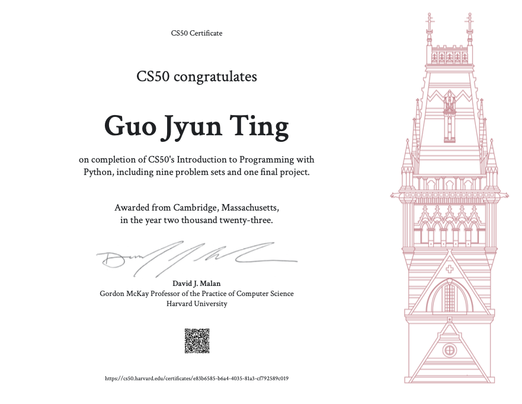
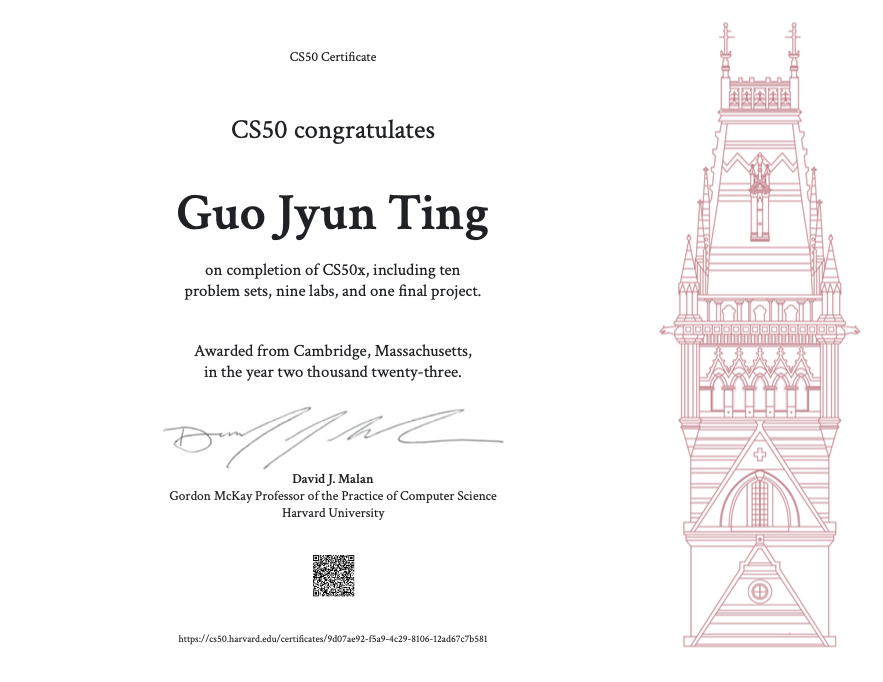

Welcome!
Welcome to my website! I'm Guo Jyun Ting, based in Taiwan. Here, I showcase my collection of diverse projects, including engaging games and several online course projects. Dive into classics like chess, reversi, and dark chess, while exploring some of the other intriguing projects I've created. Get ready for an enjoyable experience filled with entertainment and discovery!
Self introduction
After concluding my tenure in the military, I transitioned into the civil engineering construction sector for a year. However, I encountered a misalignment between the industry's practices and my environmental principles. Seeking new avenues for growth and knowledge, I made a pivotal decision to redirect my career path.
This led me to immerse myself in programming, utilizing online resources to delve into this captivating realm. Beginning with Python, I gradually expanded my expertise to encompass front-end languages such as JavaScript. As I honed my skills in these languages, a profound passion for software engineering ignited within me.
My journey continued with enrollment in several CS50 classes, solidifying my commitment to pursuing software engineering as my primary career aspiration.
Education
Master's Degree in Civil Engineering division of structural engineering from National Taiwan University, Graduated[Aug, 2021]
Bachelor's Degree in Civil Engineering from National Taiwan University, Graduated[Jul, 2019]
Work Experience
Structural Engineer
CECI, Taipei | Apr 2022 - Apr 2023
Work content
Contributed to the structural design of MRT project structures, meticulously preparing comprehensive calculation books and illustrative materials to support project documentation.
Collaborated with departments to develop and implement automation programs, streamlining processes and enhancing operational efficiency.
Played a pivotal role in reviewing engineering drawings, offering valuable insights and assistance to ensure accuracy and adherence to specifications.
Skills
The courses I've completed encompass a range of subjects and technologies, including:
After completing several online courses, I've developed a strong skill set that includes proficiency in:
-
Python
Proficient in utilizing Python for scripting, data analysis, and backend web development.
-
HTML/CSS
Strong command of HTML and CSS for structuring and styling web content, ensuring visually appealing and responsive design layouts.
-
JavaScript
Experienced in JavaScript to create interactive and dynamic features on web pages, enhancing user experience.
-
Bootstrap
Skilled in using the Bootstrap framework for efficient and responsive frontend development.
-
Django
Proficient in the Django framework for building robust and scalable web applications, handling backend development and database integration.
-
SQLite
Experienced in managing SQLite databases within web applications, ensuring efficient data storage and retrieval.
Certifications

CS50's Introduction to Programming with Python

CS50's Introduction to Computer Science